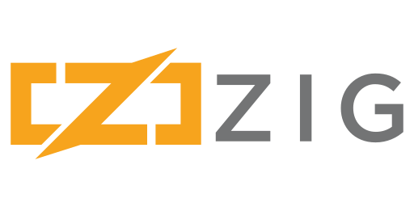

⚡ A Simple Language Focus on debugging your application rather than debugging your programming language knowledge. No hidden control flow. No hidden memory allocations. No preprocessor, no macros. ⚡ Comptime A fresh approach to metaprogramming based on compile-time code execution and lazy evaluation. Call any function at compile-time. Manipulate types as values without runtime overhead. Comptime emulates the target architecture. ⚡ Maintain it with Zig Incrementally improve your C/C++/Zig codebase. Use Zig as a zero-dependency, drop-in C/C++ compiler that supports cross-compilation out-of-the-box. Leverage zig build to create a consistent development environment across all platforms. Add a Zig compilation unit to C/C++ projects, exposing the rich standard library to your C/C++ code.